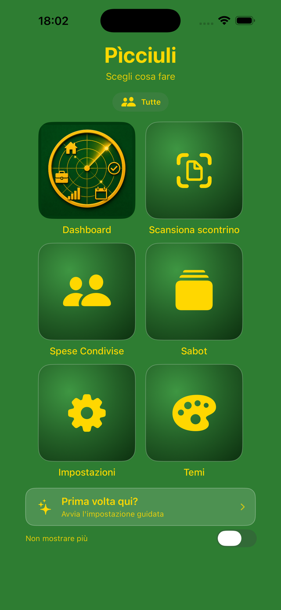
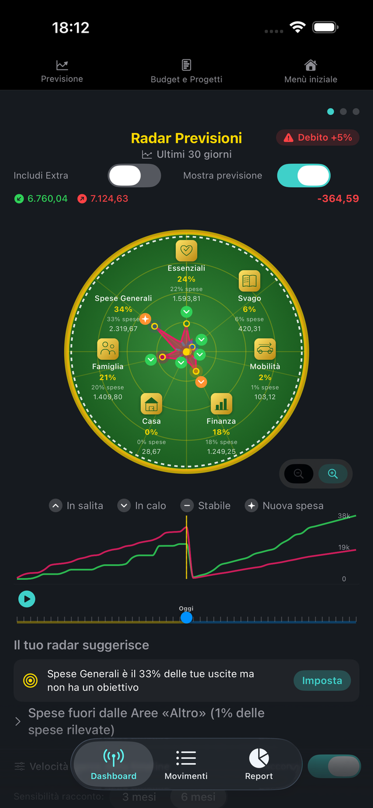
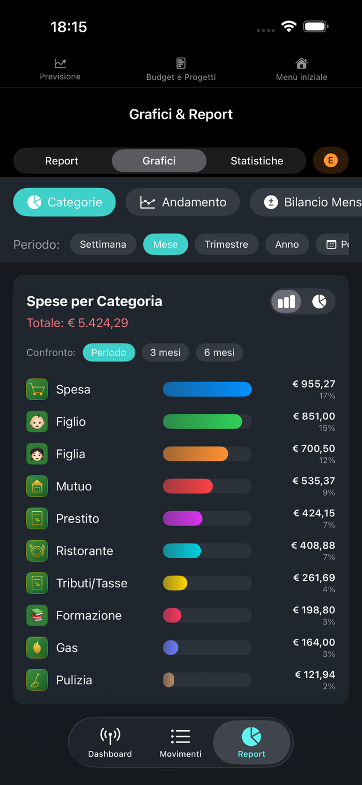

Cinquanta secondi per capire com'è fatta
Tre schermate



Come funziona
Due bilanci, un'app sola
Ogni movimento nasce personale o professionale. I totali restano distinti, senza doppie installazioni e senza fogli di calcolo a parte.
Scontrini e fatture
La fotocamera legge lo scontrino e compila il movimento. I file esistenti si importano da CSV o XLSX.
Ricorrenze e progetti
Affitti, rate e abbonamenti si inseriscono una volta. Budget e progetti tengono il conto di quanto resta.
I dati restano dove sono
L'archivio vive sul dispositivo e si sincronizza col proprio iCloud. Nessun server di mezzo. L'intelligenza artificiale si collega solo se la si vuole, ed è la propria.